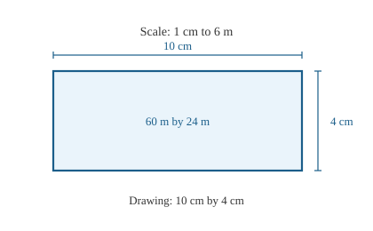
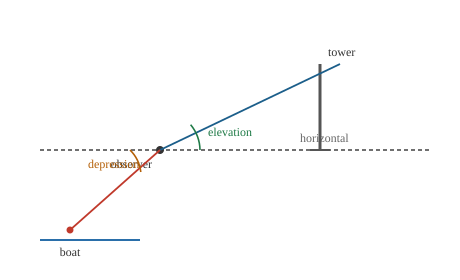

Based on Cambridge IGCSE Mathematics Core & Extended Coursebook, Chapter 15, printed pp.472–475 (scale drawings, angles of elevation and depression, and the scale-drawing exercise on printed p.475). Printed pages were read from the coursebook scans (printed 472–475 = part 046 pages 9–12). Own wording and new numbers. Teaching stops before 15.2 Bearings on printed p.476.
Key words: scale drawing, angle of elevation, angle of depression
A scale drawing is a carefully drawn diagram in which every length is a fixed fraction of the real length. The scale of the map may be written as a ratio, such as \(1:50000\), or in words, such as “1 cm to 10 m”. The ratio \(1:50000\) means that 1 cm on the drawing represents \(50000\) cm in reality, which is 500 m, or 0.5 km.
To convert a length on a scale drawing into a real length, multiply by the scale factor. To convert a real length into a length on the drawing, divide by the scale factor. First write both lengths in the same unit. Angles are not scaled: an angle on a scale drawing is equal to the corresponding real angle.

Book: Worked example 1 style, printed p.473. New numbers.
A rectangular courtyard is 60 m long and 24 m wide. A scale drawing is made using a scale of 1 cm to 6 m. Find the length and the width of the drawing.
Answer: 10 cm by 4 cm
Book: converting a given scale into the form 1 to n, printed p.476 style used already at 15.1. New numbers.
A map uses a scale of 1 cm to 8 km. Write this scale of the map in the form \(1:n\).
Answer: \(1:800000\)
The angle of elevation of an object is the angle between the horizontal and the line of sight when you look up at the object. The angle of depression is the angle between the horizontal and the line of sight when you look down at the object. Both angles are always measured from the horizontal, never from the vertical.

To make an accurate scale drawing, choose a simple scale, draw a north line or a horizontal if the question needs one, mark each given angle with a protractor, and only then measure the length you need and convert it back with the scale of the drawing.
A map uses a scale of 1 cm to 8 km. When this scale of the map is written as \(1:n\), what is the value of \(n\)?
Answer: \(800000\)
A path is 40 m long. It is shown on a scale drawing that uses a scale of 1 cm to 4 m. What is the length, in centimetres, of the path on the drawing?
Answer: \(10\)
The height of a tower is 12 cm on a scale drawing that uses a scale of 1 cm to 5 m. What is the actual height of the tower, in metres?
Answer: \(60\)
Marks: M = method, A = accurate answer (depends on M), B = independent mark. Leave exact values exact.